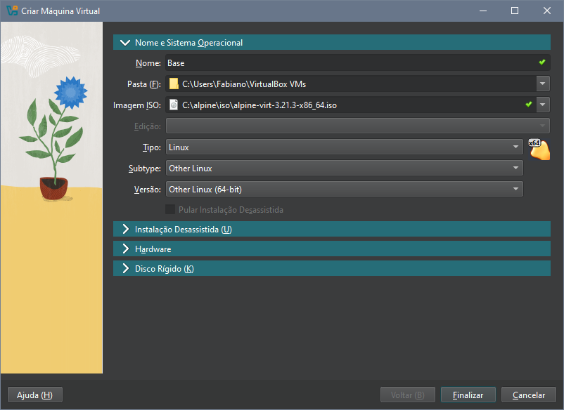
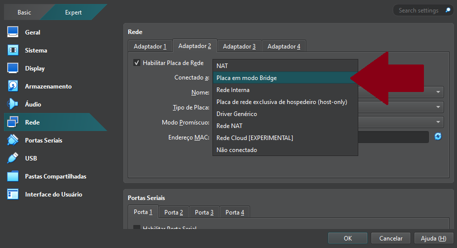
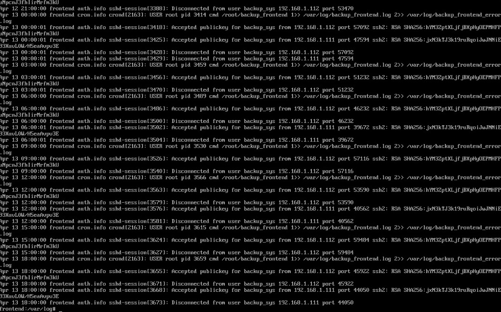
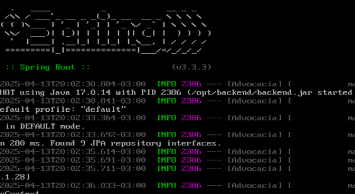
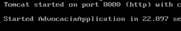
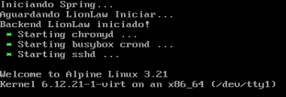
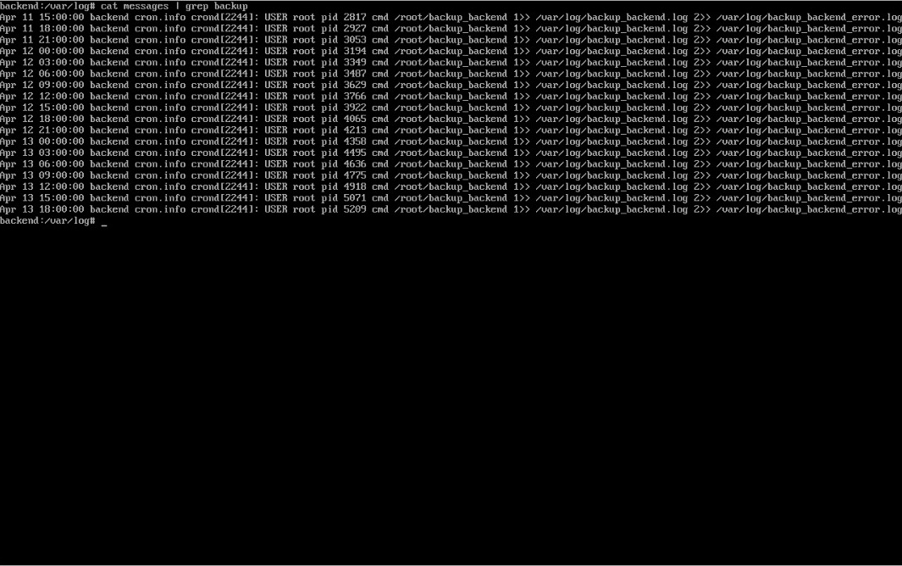
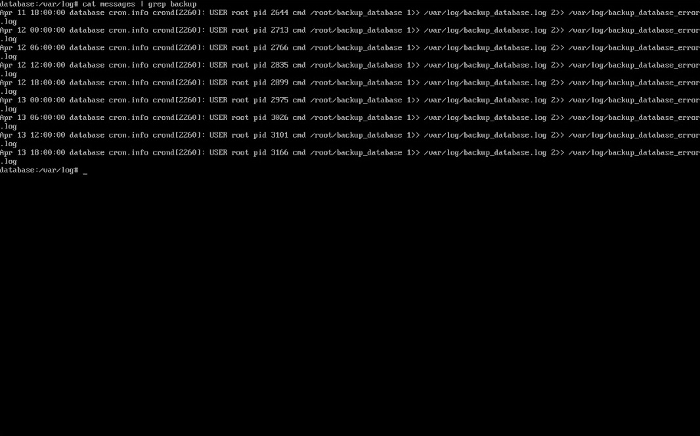
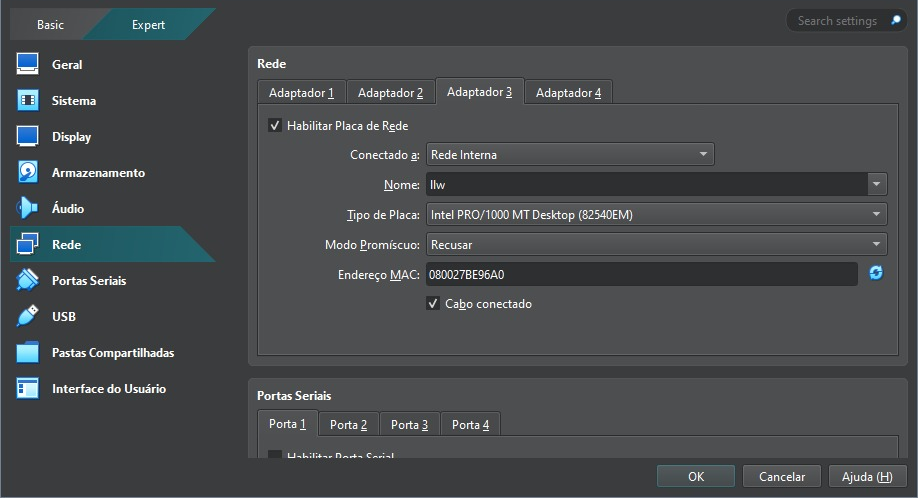

Implementação de Infraestrutura Segura e Automatizada¶
1. Instalação e Configuração do Alpine Linux no VirtualBox (VM Base)¶
Este documento explica passo a passo a configuração realizada na VM Base, e serve como template para as máquinas virtuais criadas posteriormente, com a possibilidade de clonar essa base, evitamos a necessidade de refazer configurações que são comuns a todas elas. Permitindo que o foco fique em configurar apenas o necessário para que determinada máquina virtual cumpra o objetivo para o qual foi criada, seja Frontend, Backend, Database ou qualquer possibilidade que possa surgir futuramente.
1.1 Download dos Recursos Necessários¶
Começamos com o download e instalação de um hypervisor, um software que permite executar várias máquinas virtuais em uma única máquina física. A escolha para esse projeto foi o Oracle VirtualBox.
Em seguida fizemos o download da ISO do Alpine Linux, em sua versão virtual, que dispensa interface gráfica, contando apenas com o Bash, uma interface de linha de comando (CLI) usada para interpretar comandos.
1.2 Criação da Máquina Virtual¶
Após instalar o VirtualBox e baixar a ISO do Alpine, criamos a máquina máquina virtual (VM) com as seguintes especificações:
- CPU: 1 core
- RAM: 512 MB
- Disco: 20 GB
- ISO de Boot: Alpine Linux (modo virtual)

1.3 Ajustes Iniciais da VM¶
1.4 Configuração de Rede¶
Adicionamos uma nova interface de rede em modo Bridge, para permitir que a VM se conecte a outros dispositivos na mesma rede, como se fosse um dispositivo físico separado.

1.5 Boot e Setup do Alpine Linux¶
Ao iniciar pela primeira vez, utilizamos o login com root sem informar senha:
- Login:
root - Senha: (vazio)
E o seguinte comando para iniciar a instalação do Alpine Linux:
setup-alpine
1.6 Configurações do Setup do Alpine Linux¶
Essas foram nossas escolhas para configurar a VM base, mas elas podem ser alteradas mais tarde dependendo da necessidade de cada tipo de VM.
- Layout de Teclado:
br-br - Hostname:
localhost - Interfaces de Rede:
eth0 (NAT),eth1 (Bridge) - Endereço IP:
DHCP - Configuração Manual da Interface:
n - Senha do usuário root:
root - Fuso Horário:
America/Sao_Paulo - Proxy:
none - NTP:
chrony - Repositório (Mirror):
1 - Criar um usuário comum:
n - Servidor SSH:
openssh - Permitir login root via SSH:
prohibit-password - Chave SSH para root:
none - Disco selecionado:
sda - Modo de uso do disco:
sys - Apagar dados do disco:
y
1.7 Finalizando a Instalação¶
Após concluir o processo de instalação, desligamos a máquina virtual:
poweroff
Removemos o dispositivo que contém ISO do Alpine, pois o sistema já foi instalado no disco rígido.
1.8 Gerenciamento de Pacotes¶
1.8.1 Habilitando Repositórios da Comunidade¶
Abrimos o arquivo repositories em modo de edição:
vi /etc/apk/repositories
Removemos o # na frente do link para habilitar o repositório community, que possui pacotes utilizados em nosso projeto.
http://dl-cdn.alpinelinux.org/alpine/v3.19/community
1.8.2 Atualizando o Sistema¶
Executamos os comandos para atualização dos pacotes:
O primeiro lista os pacotes disponíveis nos repositórios:
apk update
O segundo atualiza os pacotes instalados em caso de existirem atualizações:
apk upgrade
1.8.3 Instalando um Editor de Texto Alternativo¶
Parte do nosso grupo utilizou o editor de texto nano e parte utilizou o vim, para essa documentação os exemplos serão com vim:
apk add vim
1.9 Melhorando a integração com o host¶
Instalamos o VirtualBox Guest Additions para melhorar a integração com o host:
apk add virtualbox-guest-additions
Em seguida iniciamos o serviço e configuramos para que inicie automaticamente:
rc-service virtualbox-guest-additions start
rc-update add virtualbox-guest-additions
1.10 Configurando Acesso SSH¶
Editamos o arquivo de configuração do SSH para permitir o acesso por senha temporariamente:
vim /etc/ssh/sshd_config
Alteramos duas linhas para permitir conexão ssh com root e para permitir login com senha:
PermitRootLogin yes
PasswordAuthentication yes
E reiniciamos o serviço para confirmar as alterações:
rc-service sshd restart
1.11 Acesso via Chave SSH¶
1.11.1 Gerando Chave no Host¶
No powershell do Windows geramos um par de chaves:
ssh-keygen -t rsa -b 4096 -f id_rsa
No momento de gerar as chaves deixamos o campo de senha vazio.
1.11.2 Preparando a VM para Receber a Chave¶
Na VM criamos o diretório .ssh:
mkdir /root/.ssh
E no Windows enviamos a chave pública para a pasta .ssh da VM via scp:
scp .ssh/id_rsa.pub root@192.168.1.108:/root/.ssh/authorized_keys
Ajustamos as permissões do arquivo enviado:
chmod 600 /root/.ssh/authorized_keys
e em seguida testamos a conexão:
ssh root@192.168.1.108
1.11.3 Desabilitando Acesso por Senha¶
Editamos novamente o sshd_config, dessa vez para impedir o acesso por senha:
PasswordAuthentication no
E reiniciamos o serviço para aplicar as configurações:
rc-service sshd restart
A partir deste ponto, o acesso à VM será feito exclusivamente via chave SSH e sem utilização de senha.
2. Configuração da VM Frontend¶
A VM Frontend é responsável por hospedar a interface do sistema utilizando o servidor web nginx, e também atua como servidor de backups, armazenando os arquivos de backup de todas as outras VMs, incluindo ela mesma. Por esse motivo, ela possui um arquivo authorized_kyes com a chave pública rsa de cada uma das outras máquinas virtuais em seu usuário backup_sys, permitindo que os arquivos de backup sejam recebidos via scp.
2.1 Clonando a VM Base¶
Começamos fazendo o clone do tipo completo da VM base, que foi criada previamente.

2.1.1 Configuração da Interface em modo bridge¶
Para cada VM que clonamos foi necessário atribuir um IP próprio editando o arquivo de interfaces:
vim /etc/network/interfaces
Como a nossa interface em modo bridge é o adaptador 2, ela fica identificada como eth1:
auto lo
iface lo inet loopback
auto eth0
iface eth0 inet dhcp
auto eth1
iface eth1 inet static
address 192.168.0.3
netmask 255.255.255.0
Após salvar o arquivo reiniciamos o serviço:
rc-service networking restart
2.2 Alterando o Hostname¶
Para diferenciar a VM Frontend das demais, alteramos seu hostname para frontend, editando o arquivo de hostname:
vim /etc/hostname
As alterações no hostname só têm efeito após um reboot:
2.3 Configurando resolução de nome para os IPs¶
Para nosso projeto utilizamos o nome backend.llw para o backend e é através dele que o frontend realiza requisições, então foi necessário alterar o arquivo hosts:
vim /etc/hosts
E informamos o IP do backend com seu respectivo nome:
"192.168.0.1" backend.llw
2.4 Arquivo Hosts no Windows¶
Editamos o arquivo hosts do Windows com permissões de administrador que fica localizado no seguinte diretório:
C:\Windows\System32\drivers\etc\hosts
E informamos o IP do backend com seu respectivo nome assim como fizemos na VM:
192.168.1.106 backend.llw
2.5 Instalando o Nginx¶
Instalamos o servidor web nginx:
apk add nginx
Iniciamos o serviço e configuramos para que inicie automaticamente:
rc-service nginx start
rc-update add nginx
2.6 Configurando o Nginx¶
Editamos o arquivo de configuração do nginx:
vim /etc/nginx/http.d/default.conf
Adicionamos logs de acesso e de erros no arquivo:
access_log /var/log/nginx/frontend_access.log;
error_log /var/log/nginx/frontend_error.log;
Indicamos o caminho onde os nossos arquivos estáticos de frontend estão localizados:
location / {
root /opt/frontend;
index index.html;
try_files $uri $uri/ /index.html;
}
E recarregamos o nginx para confirmar as alterações:
nginx -s reload
2.7 Buildando o Frontend¶
No Windows antes de fazer o build do frontend, foi necessário configurar corretamente o endereço IP da API Backend.
Editamos o arquivo environment.server.ts do angular:
export const environment = {
production: true,
apiUrl: 'http://backend.llw:8080'
};
Realizamos o build e compactamos os arquivos em um .zip, para só então realizar o envio via scp para a VM no diretório que criamos em /opt/frontend
scp site.zip root@192.168.1.105:/opt/frontend/
Já na VM descompactamos o arquivo usando o comando:
unzip site.zip
Com esse passo já foi possível visualizar a tela inicial do projeto utilizando o ip da VM Frontend no navegador.

2.8 Preparando o ambiente para o backup¶
Criamos um diretório para armazenar os backups:
mkdir /opt/backup/
Em seguida diretórios que separam os backups buscando organizar os arquivos:
mkdir /opt/backup/frontend/
mkdir /opt/backup/backend/
mkdir /opt/backup/database/
E por fim adicionamos um novo usuário chamado backup_sys definindo a home dele dentro do diretório de backups:
adduser -h /opt/backup backup_sys
2.9 Recebendo as chaves RSA das outras VM's:¶
2.9.1 Criando o par de chaves¶
Na VM Backend e Database criamos as chaves RSA:
ssh-keygen -t rsa -b 4096 -f id_rsa
E na VM Frontend editamos o arquivo de configuração do ssh:
vim /etc/ssh/sshd_config
Permitimos o login com senha provisoriamente, apenas para conseguirmos enviar a chave pública:
PasswordAuthentication yes
Reiniciamos o serviço para aplicar as configurações:
rc-service sshd restart
2.9.2 Enviando a chave pública para backup_sys¶
Enviamos a chave pública da VM Backend para o backup_sys modificando o nome para authorized_keys:
scp id_rsa.pub backup_sys@frontend.llw:/opt/backup/.ssh/authorized_keys
Em seguida enviamos a chave pública da VM Database para o backup_sys, mas sem dar um nome diferente para a chave:
scp id_rsa.pub backup_sys@frontend.llw:/opt/backup/.ssh/
Na VM Frontend, utilizamos o comando cat para adicionar a segunda chave pública no final do arquivo authorized_keys:
cat /opt/backup/.ssh/id_rsa.pub >> /opt/backup/.ssh/authorized_keys
Apagamos o arquivo id_rsa.pub que ficou sobrando:
rm /opt/backup/.ssh/id_rsa.pub
Modificamos as permissões da chave:
chmod 600 /opt/backup/.ssh/authorized_keys
E alteramos o proprietário dessa pasta .ssh localizada em /opt/backup:
chown -R backup_sys:backup_sys /opt/backup/.ssh
2.9.3 Retirando a autenticação por senha¶
Por fim editamos novamente o sshd_config, dessa vez para impedir o acesso por senha:
PasswordAuthentication no
E reiniciamos o serviço para aplicar as configurações uma última vez:
rc-service sshd restart
2.10 Configurando o script de backup local¶
Criamos o arquivo em /root/:
vim /root/backup_front
E preenchemos da seguinte forma:
#!/bin/sh
timestamp=$(date '+%Y-%m-%d_%H-%M-%S')
temp_dir="/tmp/backup_front_$timestamp"
front_dir="$temp_dir/front"
front_end="/opt/frontend"
authorized_keys="/root/.ssh/authorized_keys"
tar_file="/opt/backup/frontend/backup_front_$timestamp.tar.gz"
echo "Criando diretórios temporários, Data: $timestamp"
mkdir -p "$front_dir" || { echo "Erro ao criar diretório temporário, Data: $timestamp"; exit 1; }
echo "Copiando arquivos do frontend, Data: $timestamp"
cp -r "$front_end/"* "$front_dir/" || { echo "Erro ao copiar arquivos do frontend, Data: $timestamp"; rm -rf "$temp_dir"; exit 1; }
echo "Copiando authorized_keys, Data: $timestamp"
cp "$authorized_keys" "$temp_dir/" || { echo "Erro ao copiar authorized_keys, Data: $timestamp"; rm -rf "$temp_dir"; exit 1; }
echo "Compactando tudo, Data: $timestamp"
tar -czf "$tar_file" -C "$(dirname "$temp_dir")" "$(basename "$temp_dir")" || { echo "Erro ao compactar, Data: $timestamp"; rm -rf "$temp_dir"; exit 1; }
echo "-> Backup criado com sucesso, Data: $timestamp "
rm -rf "$temp_dir"
exit 0
E por fim tornamos o arquivo executável:
chmod +x /root/backup_front
2.11 Agendamento de Script Backup com Crontab¶
Editamos o arquivo de agendamento padrão do Linux Alpine:
vim /etc/crontabs/root
Adicionamos essa linha ao final do arquivo para rodar o script de backup automaticamente a cada 3 horas:
0 */3 * * * /root/backup_front 1>> /var/log/backup_front.log 2>> /var/log/backup_front_error.log
Utilizamos o comando cat em messages depois do tempo proposto:
cat /var/log/messages | grep backup

Resultado do log do Cron
3. Configuração da VM Backend¶
A VM Backend é responsável por executar a nossa API utilizando o Java 17, ela possui um usuário dedicado backend que executará o processo, e também um script de inicialização que executará automaticamente ao ligar a máquina virtual.
3.1 Clonando a VM Base¶
Começamos fazendo o clone do tipo completo da VM base, que foi criada previamente.
3.1.1 Configuração da Interface em modo bridge¶
Para cada VM que clonamos foi necessário atribuir um IP próprio editando o arquivo de interfaces:
vim /etc/network/interfaces
Como a nossa interface em modo bridge é o adaptador 2, ela fica identificada como eth1:
auto lo
iface lo inet loopback
auto eth0
iface eth0 inet dhcp
auto eth1
iface eth1 inet static
address 192.168.0.1
netmask 255.255.255.0
Após salvar o arquivo reiniciamos o serviço:
rc-service networking restart
3.2 Alterando o Hostname¶
Para diferenciar a VM Frontend das demais, alteramos seu hostname para frontend, editando o arquivo de hostname:
vim /etc/hostname
As alterações no hostname só têm efeito após um reboot:
3.3 Configurando resolução de nome para os IPs¶
Para nosso projeto utilizamos o nome database.llw para o banco de dados e é através dele que o backend se comunica com a VM de database, então foi necessário alterar o arquivo hosts:
vim /etc/hosts
E informamos o IP da database com seu respectivo nome:
192.168.0.2 database.llw
3.4 Instalando o Java 17¶
Instalamos o Java 17 com o comando:
apk add openjdk17
3.5 Buildando o Projeto¶
No Windows antes de fazer a build do backend, foi necessário configurar corretamente o endereço IP da VM Database junto com o usuário e senha do banco de dados.
Editamos o arquivo application.properties:
spring.datasource.url=jdbc:mysql://database.llw:3306/adv
spring.datasource.username=advocacia
spring.datasource.password=PePeFaFe!05
Depois enviamos o arquivo jar por scp para o diretório /opt/backend que criamos na VM:
scp backend.jar root@192.168.105:/opt/backend/
Após esse passo executamos o comando:
java -jar backend.jar


Como tudo foi configurado corretamente, a aplicação iniciou.
3.6 Criando o script para rodar a API automaticamente¶
Adicionamos um novo usuário chamado backend que é o responsável por rodar a aplicação e definimos a home dele em /opt/backend:
adduser -h /opt/backend backend
Em seguida dentro do diretório /etc/init.d / abrimos um novo arquivo em branco chamado backend:
vim /etc/init.d/backend
Preenchemos ele com o seguinte script:
#!/sbin/openrc-run
description="Lionlaw"
java="/usr/bin/java"
arquivo="/opt/backend/backend.jar"
pidfile="/opt/backend/lionlaw.pid"
output_log="/opt/backend/backend.out"
usuario="backend"
depend() {
need net
after local
}
start_pre() {
echo "Iniciando Spring..."
}
start() {
cd /opt/backend || exit 1
su -s /bin/sh -c "nohup $java -jar $arquivo > $output_log 2>&1 & echo \$! > $pidfile" $usuario
echo "Aguardando LionLaw Iniciar..."
for i in $(seq 1 60); do
if netstat -tlnp 2>/dev/null | grep -q ":8080 "; then
echo "Backend LionLaw iniciado!"
return 0
fi
sleep 1
done
echo "Falha ao iniciar LionLaw."
return 1
}
stop() {
echo "Parando serviço..."
if [ -f "$pidfile" ]; then
kill -9 "$(cat $pidfile)" && rm -f "$pidfile"
echo "LionLaw parado."
else
echo "Nenhum serviço rodando na porta 8080."
fi
}
Tornamos o arquivo executável:
chmod +x /etc/init.d/backend
Iniciamos a aplicação e configuramos para que inicie automaticamente:
service backend start
rc-update add backend
Com essa configuração a aplicação executa automaticamente ao ligar a máquina virtual 
3.7 Configurando o script de backup¶
Criamos o arquivo em /root/:
vim /root/backup_backend
E preenchemos da seguinte forma:
#!/bin/ash
timestamp=$(date '+%Y-%m-%d_%H-%M-%S')
temp_dir="/tmp/backup_backend_$timestamp"
init_script="/etc/init.d/backend"
authorized_keys="/root/.ssh/authorized_keys"
tar_file="/tmp/backup_backend_$timestamp.tar.gz"
remote_user="backup_sys"
remote_host="frontend.llw"
remote_path="/opt/backup/backend"
echo "Criando diretórios temporários, Data: $timestamp"
mkdir -p "$temp_dir" || { echo "Erro ao criar diretório temporário, Data: $timestamp"; exit 1; }
echo "Copiando script de inicialização, Data: $timestamp"
cp "$init_script" "$temp_dir/" || { echo "Erro ao copiar o script backend, Data: $timestamp"; rm -rf "$temp_dir"; exit 1; }
echo "Copiando authorized_keys, Data: $timestamp"
cp "$authorized_keys" "$temp_dir/" || { echo "Erro ao copiar authorized_keys, Data: $timestamp"; rm -rf "$temp_dir"; exit 1; }
echo "Compactando arquivos, Data: $timestamp"
tar -czf "$tar_file" -C "$(dirname "$temp_dir")" "$(basename "$temp_dir")" || { echo "Erro ao compactar, Data: $timestamp"; rm -rf "$temp_dir"; exit 1; }
echo "Enviando backup para $remote_host:$remote_path, Data: $timestamp"
scp "$tar_file" "$remote_user@$remote_host:$remote_path/" || { echo "Erro ao enviar o backup via SCP, Data: $timestamp"; rm -rf "$temp_dir" "$tar_file"; exit 1; }
echo "-> Backup enviado com sucesso, Data: $timestamp"
rm -rf "$temp_dir" "$tar_file"
exit 0
3.7.1 Resolvendo o nome do IP de backup¶
Escolhemos o nome frontend.llwpara a VM Frontend e para o script funcionar corretamente foi necessário resolver o nome do IP de destino editamos o arquivo hosts:
vim /etc/hosts
E informamos o IP do frontend com seu respectivo nome:
"192.168.0.3" frontend.llw
3.8 Agendamento de Script Backup com Crontab¶
Editamos o arquivo de agendamento padrão do Linux Alpine:
vim /etc/crontabs/root
Adicionamos essa linha ao final do arquivo para rodar o script de backup automaticamente a cada 3 horas:
0 */3 * * * /root/backup_backend 1>> /var/log/backup_backend.log 2>> /var/log/backup_backend_error.log
Utilizamos o comando cat em messages depois do tempo proposto:
cat /var/log/messages | grep backup

Resultado do log do Cron
4. Configuração da VM Database¶
A VM Database é responsável por armazenar o banco de dados que será utilizado pela API e o SGBD escolhido para o projeto é o MariaDB em conjunto com o mysql-client.
4.1 Clonando a VM Base¶
Começamos fazendo o clone do tipo completo da VM base, que foi criada previamente.
4.1.1 Configuração da Interface em modo bridge¶
Para cada VM que clonamos foi necessário atribuir um IP próprio editando o arquivo de interfaces:
vim /etc/network/interfaces
Como a nossa interface em modo bridge é o adaptador 2, ela fica identificada como eth1:
auto lo
iface lo inet loopback
auto eth0
iface eth0 inet dhcp
auto eth1
iface eth1 inet static
address 192.168.0.2
netmask 255.255.255.0
Após salvar o arquivo reiniciamos o serviço:
rc-service networking restart
4.2 Alterando o Hostname¶
Para diferenciar a VM Database das demais, alteramos seu hostname para database, editando o arquivo de hostname:
vim /etc/hostname
As alterações no hostname só têm efeito após um reboot:
4.3 Configurando resolução de nome para os IPs¶
Para nosso projeto utilizamos o nome backend.llw para o backend e é através dele que a VM Database vai saber quem está conectado a ela, por isso editamos o arquivo hosts:
vim /etc/hosts
E informamos o IP do backend com seu respectivo nome:
192.168.0.1 backend.llw
4.4 Instalando MariaDB¶
Instalamos o MariaDB em conjunto com o mysql-client:
apk add mariadb mysql-client
MariaDB é nosso SGBD, mas utilizamos o mysql-client para acessar a base de dados para manutenção e configuração de usuários e permissões.
Rodamos o script de setup do MariaDB:
/etc/init.d/mariadb setup
E editamos o arquivo de configuração:
vim /etc/my.cnf.d/mariadb-server.cnf
Modificamos o arquivo de configurações do mysql:
[mysqld]
#skip-networking
bind-address=database.llw
port=3306
Iniciamos o serviço e configuramos para que inicie automaticamente:
rc-service mariadb start
rc-update add mariadb
Com esse passo o MariaDB vai rodar sempre que ligarmos VM, e vai receber conexões de todas as interfaces de rede pela porta 3306 que tiverem permissão.
4.4 Configurando o ambiente do Banco de Dados¶
Entramos no mysql-client utilizando o usuário root, sem senha no primeiro acesso:
mysql -u root
Escolhemos uma senha forte para o root:
ALTER USER 'root'@'localhost' IDENTIFIED BY 'SenhaForte';
Nossa senha do root não será informada na documentação.
Criamos a base de dados utilizada por nossa API:
create database adv;
Em seguida criamos o user mysql que será utilizado pela API para acessar a database:
CREATE USER 'llw'@'backend.llw' IDENTIFIED BY 'PePeFaFe!05';
GRANT SELECT,INSERT,UPDATE,DELETE ON adv.* TO 'llw'@'backend.llw';
Na primeira execução foi dada a permissão de CREATE, porém após a criação das tabelas removemos a permissão com REVOKE.
4.5 Configurando o script de backup¶
Criamos o arquivo em /root/:
vim /root/backup_database
E preenchemos da seguinte forma:
#!/bin/ash
timestamp=$(date '+%Y-%m-%d_%H-%M-%S')
temp_dir="/tmp/backup_database_$timestamp"
dump_file="/tmp/lionlaw_$timestamp.sql"
ssh_key="/root/.ssh/authorized_keys"
tar_file="/tmp/backup_database_$timestamp.tar.gz"
remote_user="backup_sys"
remote_host="frontend.llw"
remote_path="/opt/backup/database"
db_user="USER"
db_pass="SENHA"
db_name="adv"
echo "Criando diretório temporário, Data: $timestamp"
mkdir -p "$temp_dir" || { echo "Erro ao criar diretório temporário, Data: $timestamp"; exit 1; }
echo "Realizando dump do banco de dados, , Data: $timestamp"
mariadb-dump -u"$db_user" -p"$db_pass" "$db_name" > "$dump_file" || { echo "Erro ao gerar o dump, Data: $timestamp"; rm -rf "$temp_dir" "$dump_file"; exit 1; }
echo "Copiando dump do banco de dados, Data: $timestamp"
cp "$dump_file" "$temp_dir/" || { echo "Erro ao dump do banco de dados, Data: $timestamp"; rm -rf "$temp_dir" "$dump_file"; exit 1; }
cp "$ssh_key" "$temp_dir/" || { echo "Erro ao copiar authorized_keys, Data: $timestamp"; rm -rf "$temp_dir" "$dump_file"; exit 1; }
echo "Compactando tudo, Data: $timestamp"
tar -czf "$tar_file" -C "$(dirname "$temp_dir")" "$(basename "$temp_dir")" || { echo "Erro ao compactar arquivos, Data: $timestamp"; rm -rf "$temp_dir" "$dump_file"; exit 1; }
echo "Enviando para $remote_user@$remote_host:$remote_path, Data $timestamp"
scp "$tar_file" "$remote_user@$remote_host:$remote_path/" || { echo "Erro ao enviar o backup via SCP, Data: $timestamp"; rm -rf "$temp_dir" "$dump_file" "$tar_file"; exit 1; }
echo "-> Backup enviado com sucesso, Data: $timestamp"
rm -rf "$temp_dir" "$dump_file" "$tar_file"
exit 0
E por fim tornamos o arquivo executável:
chmod +x /root/backup_database
4.6 Resolvendo o nome do IP de backup¶
Escolhemos o nome frontend.llwpara a VM Frontend e para o script funcionar corretamente foi necessário resolver o nome do IP de destino:
editamos o arquivo hosts:
vim /etc/hosts
E informamos o IP do frontend com seu respectivo nome:
"192.168.0.3" frontend.llw
4.7 Agendamento de Script Backup com Crontab¶
Editamos o arquivo de agendamento padrão do Linux Alpine:
vim /etc/crontabs/root
Adicionamos essa linha ao final do arquivo para rodar o script de backup automaticamente a cada 6 horas:
0 */6 * * * /root/backup_database 1>> /var/log/backup_database.log 2>> /var/log/backup_database_error.log
Utilizamos o comando cat em messages depois do tempo proposto:
cat /var/log/messages | grep backup

Resultado do log do Cron
5. Segurança Extra¶
5.1 Rede Interna¶
5.1.1 Configuração de Rede nas VMs¶
Alteramos o Adaptador 2 das VMs Backend e Database para Rede Interna e nomeamos a rede como llw
Para a VM Frontend incluímos um terceiro adaptador como rede interna e também nomeamos como llw

5.1.2 Configuração dos IPs¶
O IP escolhido para a rede interna foi 10.10.10.0/29, então foi necessário configurar o arquivo interfaces e o arquivo de hosts das VMs.
Em cada uma delas usamos o comando de editar o arquivo
vim /etc/network/interfaces
VM Frontend
auto lo
iface lo inet loopback
auto eth0
iface eth0 inet dhcp
auto eth1
iface eth1 inet static
address 192.168.0.3
netmask 255.255.255.0
auto eth2
iface eth2 inet static
address 10.10.10.3
netmask 255.255.255.248
network 10.10.10.0
VM Backend
auto lo
iface lo inet loopback
auto eth0
iface eth0 inet dhcp
auto eth1
iface eth1 inet static
address 10.10.10.1
netmask 255.255.255.248
network 10.10.10.0
VM Database
auto lo
iface lo inet loopback
auto eth0
iface eth0 inet dhcp
auto eth1
iface eth1 inet static
address 10.10.10.2
netmask 255.255.255.248
network 10.10.10.0
E para os hosts usamos o comando de edição do arquivo:
vim /etc/hosts
Resolvemos os nomes para os IPs da rede interna:
10.10.10.1 backend.llw
10.10.10.2 database.llw
10.10.10.3 frontend.llw
5.2.3 Configuração do nginx¶
Editamos o arquivo de configuração do nginx para configurar o proxy reverso:
vim /etc/nginx/http.d/default.conf
O arquivo foi editado com essas informações:
server {
listen 80;
listen 8080;
listen [::]:80;
server_name backend.llw;
access_log /var/log/nginx/frontend_access.log;
error_log /var/log/nginx/frontend_error.log;
location / {
root /opt/frontend;
index index.html;
try_files $uri $uri/ /index.html;
}
location /api/ {
proxy_pass http://backend.llw:8080;
proxy_http_version 1.1;
proxy_set_header Host $host;
proxy_set_header X-Real-IP $remote_addr;
proxy_set_header X-Forwarded-For $proxy_add_x_forwarded_for;
proxy_set_header X-Forwarded-Proto $scheme;
proxy_pass_request_headers on;
proxy_pass_request_body on;
}
location = /404.html {
internal;
}
}
5.2 Firewall¶
Utilizamos iptables para bloquear todos o acesso às portas inutilizadas.
Instalamos iptables em todas as VMs:
apk add iptables
Adicionamos as seguintes regras de tráfego:
iptables -P INPUT DROP
iptables -P OUTPUT ACCEPT
iptables -P FORWARD DROP
Colocamos o iptables para iniciar no boot:
rc-service add iptables boot
Salvamos as regras do iptables no init.d:
/etc/init.d/iptables save
5.2.1 Excessões VM Database¶
iptables -A INPUT -p tcp -s backend.llw -d database.llw --dport 3306 -j ACCEPT
iptables -A INPUT -m state --state ESTABLISHED,RELATED -j ACCEPT
5.2.2 Excessões VM Backend¶
iptables -A INPUT -p tcp -s frontend.llw -d backend.llw --dport 8080 -j ACCEPT
iptables -A INPUT -m state --state ESTABLISHED,RELATED -j ACCEPT
5.2.3 Excessões VM Frontend¶
iptables -A INPUT -p tcp --dport 80 -j ACCEPT
iptables -A INPUT -p tcp --dport 8080 -j ACCEPT
iptables -A INPUT -p tcp -s backend.llw -d frontend.llw --dport 22 -j ACCEPT
iptables -A INPUT -p tcp -s database.llw -d frontend.llw --dport 22 -j ACCEPT
iptables -A INPUT -m state --state ESTABLISHED,RELATED -j ACCEPT
5.3 Permissões do MariaDB¶
Essa configuração foi mostrada anteriormente no capítulo de Database, mas adicionada a essa sessão por também fazer parte de um tópico extra.
Passamos apenas permissões necessárias para o usuário mysql do backend, impedindo que ele realize o DROP de tabelas por exemplo:
GRANT SELECT,INSERT,UPDATE,DELETE ON adv.* TO 'llw'@'backend.llw';